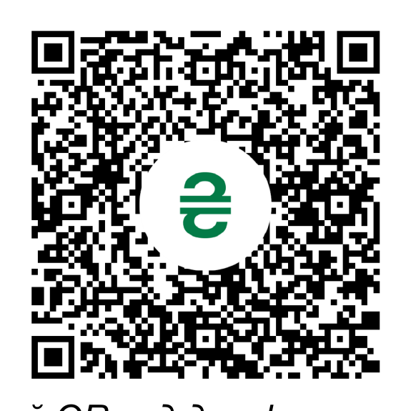

01
Безпека та оборона
Підтримка сил оборони та безпеки громад.
Об’єднуємо українські громади, бізнес, громадські організації та міжнародних партнерів для реалізації гуманітарних, соціальних і розвиткових проєктів.
Об’єднувати людей, організації та міжнародних партнерів навколо проєктів, які допомагають Україні сьогодні та створюють основу для її майбутнього розвитку.
Фонд відкритого співробітництва заснований у 2024 році для реалізації гуманітарних, соціальних та міжнародних проєктів підтримки України.
З перших днів фонд допомагає силам оборони, медичним закладам та територіальним громадам. Сьогодні ми формуємо платформу міжнародного співробітництва для довгострокового розвитку України.
Докладніше про фонд →
Підтримка сил оборони та безпеки громад.

Допомога медичним закладам і програмам відновлення.

Соціальна інфраструктура, розвиток і нові можливості для громад.

Партнерства між Україною та міжнародними організаціями.

Зелене відновлення, довкілля та європейські практики.

Відскануйте QR-код банківським застосунком для формування переказу на рахунок фонду.
 20.02.2025
20.02.2025Фонд відкритого співробітництва передав нові автомобілі швидкої допомоги для потреб міста Києва.
Читати →Партнер фонду у проєктах співробітництва, розвитку громад та сталого розвитку.
Партнери фонду →